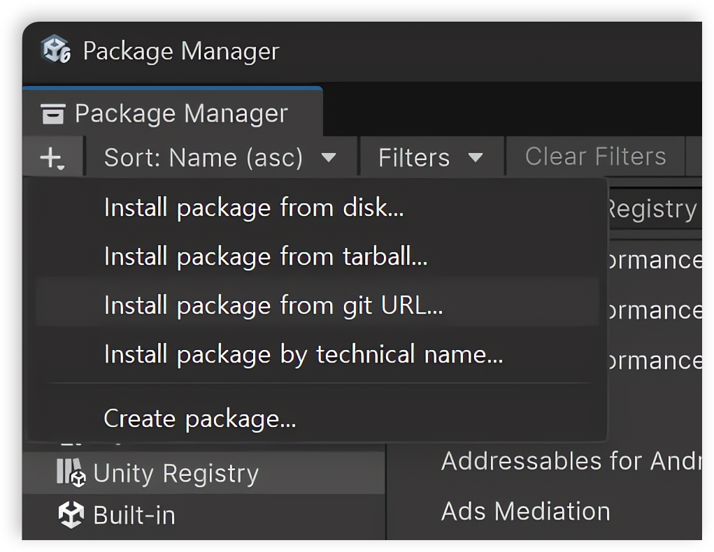
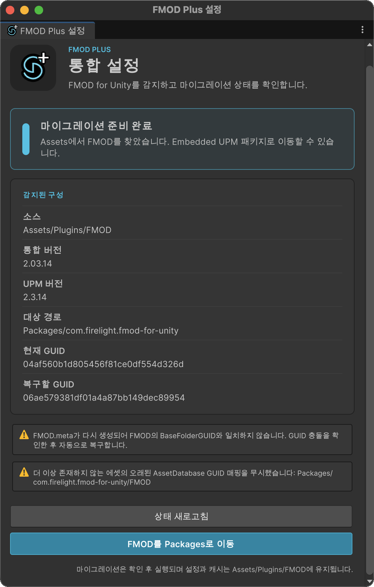

설치
먼저 FMOD for Unity를 기존 방식대로 Assets 아래에 설치하고, FMOD Plus를 Git UPM으로 추가한 다음 FMOD Plus Setup 창에서 FMOD를 Embedded UPM 패키지로 이동합니다.
1. FMOD for Unity를 Assets에 설치
FMOD Integration의 일반적인 설치 방법에 따라 FMOD for Unity를 설치합니다. 이 단계에서는 기존 Assets 경로를 유지합니다.
Assets/Plugins/FMOD
Unity 프로젝트를 열고 FMOD for Unity의 Import가 끝날 때까지 기다립니다. FMOD Plus에는 FMOD for Unity, FMOD Studio, Bank 또는 FMOD 라이선스가 포함되지 않습니다.
Important
FMOD Plus 마이그레이션을 실행하기 전에 Assets 기반 FMOD 설치를 완료하세요. Setup 창은 Assets에 설치된 FMOD를 찾아 Packages로 이동할 준비를 합니다.
2. FMOD Plus를 Git UPM으로 설치
- Unity에서 Window > Package Manager를 엽니다.
- + 버튼을 누른 뒤 Install package from git URL... 을 선택합니다.

- 다음 주소를 입력하고 Install을 누릅니다.
https://github.com/NK-Studio/com.nkstudio.fmodplus.git
3. FMOD를 Packages로 이동
FMOD Plus 설치가 완료되면 Unity 상단 메뉴에서 다음 창을 엽니다.
FMOD > FMOD Plus > Setup
Setup 창은 Assets/Plugins/FMOD의 FMOD Integration을 감지하고 마이그레이션 상태, 원본 버전, 변환할 UPM 버전, 대상 경로와 GUID 검사 결과를 표시합니다.

FMOD를 Packages로 이동 버튼을 누릅니다. 확인 대화상자의 내용을 검토한 뒤 마이그레이션을 계속합니다.
마이그레이션에 성공하면 FMOD 패키지가 다음 위치로 이동합니다.
Packages/com.firelight.fmod-for-unity
프로젝트별 FMOD Settings와 Cache는 Assets/Plugins/FMOD 아래에 유지됩니다. 이후 Unity가 감지된 FMOD 패키지를 기준으로 FMOD Plus Runtime과 Editor 어셈블리를 다시 컴파일합니다.
설치 확인
Unity가 Import와 Compile을 마친 뒤 다음을 확인합니다.
- Package Manager에 FMOD Plus와
com.firelight.fmod-for-unity가 표시됩니다. - FMOD > FMOD Plus > Setup에서 Embedded FMOD 패키지가 활성 상태로 표시됩니다.
- FMOD Audio Source 등의 FMOD Plus 컴포넌트를 추가할 수 있습니다.
- Console에 FMOD 또는 FMOD Plus 컴파일 오류가 없습니다.